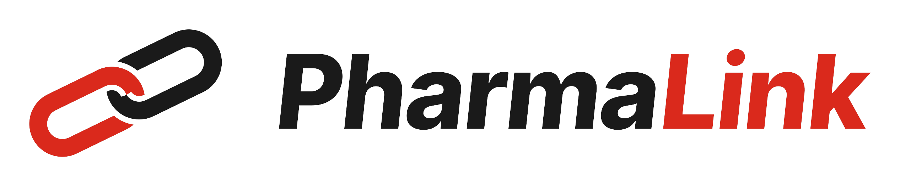

Pharmalink-AI-Knowledge

PharmaLink — Assistant knowledge base
How to use the PharmaLink app — for the Paris Pharma AI assistant
Content current as of: app v39 + flows requester v2.7 / actor v2.15 / reminders v2.6 — July 2026
0. Keeping this document up to date (READ FIRST)
This document is the knowledge source for the PharmaLink AI assistant. It describes how the app works. It MUST be refreshed every time a new version of the app or its flows is released, otherwise the assistant will give users outdated instructions.
Update rule:
Whenever a new app version (.msapp) or flow version ships, update the affected task steps below and the version history table at the end.
Update the 'Content current as of' line at the top with the new version numbers and date.
Re-upload this file to the assistant's Knowledge in Copilot Studio (remove the old file first), then re-publish the agent.
The source of truth for what changed each version is CHANGELOG.md in the PharmaLink project folder — reconcile this document against it on every release.
Assistant scope (what it should and should not do):
DO: explain how to use PharmaLink, what each role can do, what a status means, and how notifications work.
DO NOT: give clinical, medical, dosing, or regulatory advice, or make validation decisions on the user's behalf.
If a user reports a bug or something not working: point them to the '🐞 Report a bug / suggest an improvement' link on the Home screen.
If unsure, tell the user to ask their HQ pharmacy (Paris Pharma) contact.
1. What PharmaLink is
PharmaLink is a bilingual (English/French) Microsoft Power Apps application used by MSF OCP pharmacy to manage two processes:
New Article Request (NAR / Nouvelle demande d'article): request a new medical article or device to be added/sourced, with a staged validation workflow.
Cold Chain Break report (CCB / Rupture de la chaine du froid): report a temperature excursion affecting cold-chain products, with per-product HQ decisions.
It replaces the old email-and-spreadsheet process. Every case has a discussion thread and sends automatic e-mail notifications. The language is switched any time with the EN / FR toggle at the top-right of the Home screen.
2. Roles — who can do what
A user's role is detected automatically from their e-mail when they open the app. The roles line is shown under the greeting on Home.
Requester (default): anyone. Can submit NARs and CCBs and follow their own cases.
Pharma coordinator (Coordo): validates requests coming from their mission's field (first step for field requests).
Medical referent (Referent): validates requests for their medical specialty. Any referent of that specialty can act.
Medical Director (DirMed): validates non-MML requests after the referent.
HQ Pharmacy (Paris Pharma / PP): instructs requests, chooses the procurement route, records CCB product decisions, closes cases.
MSF Log: creates the new article code during international sourcing, and answers information requests.
Administrator: manages roles and missions; can act on any case.
Viewer: read-only access to their mission's cases.
You only see cases you are entitled to see: your own submissions, plus (for validators) the cases waiting for your role, plus (for coordinators/viewers) the cases of your mission.
3. How e-mail notifications work
E-mails are sent automatically at each step, from the Paris Pharma shared mailbox.
The subject is tagged by role, e.g. [Pharmalink][DirMed] Validation needed, and the body opens with the action needed and a line 'You receive this email as: <your role>'.
Each e-mail has a direct link that opens the exact case in PharmaLink.
You are NEVER e-mailed about an action you did yourself (author self-exclusion). This is why, if you hold several roles and you perform the action, you do not receive the notification — someone else performing it would trigger your e-mail.
Comments notify the person whose turn it is on the case, plus the requester. Using @name in a comment also e-mails that person directly.
A daily reminder e-mail lists cases that have been waiting too long.
Q: Why didn't I get an e-mail even though I hold that role?
A: Most likely because you are the person who performed the action — the app never notifies you about your own actions. Have a different user perform the action, or check that your account is actually listed for that role/specialty/mission.
4. Task guides
4.1 Submit a New Article Request (NAR)
Home → New Article Request.
Step 1 (Item): choose item type (Drug / Medical device / Food), product name, form/dosage. Optionally search the catalogue to pre-fill the code and price. Answer the MML questions. Press Next.
Step 2 (Clinical justification): indication/intended use, added value, protocol, indicative price. Press Next.
Step 3 (Logistics & submit): cold-chain and shelf-life flags, medical specialty (this auto-fills the referent), mission and project code. Optionally toggle 'Submit as a field request'. Press Next.
The request is created and opens on its detail page. Attach any datasheets, photos or quotes there (up to 10 files, 30 MB each).
Note: if you are yourself a referent of the chosen specialty, the referent step is skipped automatically.
4.2 Validate or act on a request (validators)
Open the request (from your e-mail link, or Home → View requests & reports → My actions). Depending on your role and the stage, buttons appear on the right:
Accept: moves the request to the next stage.
Reject: closes the request with a mandatory reason.
Request info from the field / from MSF Log: pauses the request until they reply in the discussion.
Reassign referent (PP/Admin): assigns a different referent.
Undo validation / rejection: moves the case back one step (or reopens a closed one).
You can always add a comment; use @ to notify a specific colleague.
4.3 HQ Pharmacy: procurement route and sourcing
When a validated request reaches HQ Pharmacy, PP chooses: International procurement (IP), Local purchase (LP), or MML handled.
If routed to IP, MSF Log is notified (with a Word extract of the request attached) to create the article code.
During sourcing, MSF Log or PP types the new code into the 'New article code' box on the request and presses Save code.
'Sourced – code created' stays disabled until a code has been saved; then pressing it closes the request as sourced.
If no source is found, press 'No source' to close the request.
4.4 Report a Cold Chain Break (CCB)
Home → Report a Cold Chain Break. Fill one report per affected piece of equipment.
Step 1 (Incident): mission, location, exposure start/end (date + time), temperatures, equipment/config, Freezetag / 3M card / LogTag. Press Next. (Exposure times are recorded as you enter them, in the field's local time.)
Step 2 (Details & actions): cause of the problem, what happened, corrective actions, proposed actions. Press Next.
Step 3 (Products & attachments): add each affected product (search the cold-chain catalogue or type it in), and attach the LogTag report and any evidence. Press Submit.
4.5 HQ Pharmacy: decide on CCB products and give final feedback
On the CCB, open the Products tab. For each product press Decide and choose: No restriction, With restriction, or Cannot use (with a comment). Each decision notifies the requester and the mission cells.
The 'Final feedback' button that closes the report is disabled until at least one product exists AND every product has a decision (none left on Waiting).
'Request info from the field / MSF Log' pauses the CCB for more information. 'Cancel this report' cancels it.
4.6 Comment and @mention
Every case has a discussion thread. Type a comment and press Send.
Type @ then a name to notify a specific person by e-mail, even if it is not their turn.
A plain comment (no @) notifies whoever the case is currently waiting on, plus the requester.
4.7 Dashboard and annual report
Home → Dashboard (HQ roles): live tiles per stage, the oldest open requests, and CCBs awaiting a decision.
'Export a report' generates the annual Excel files (one row per request/CCB plus statistics); they arrive by e-mail and are stored in the NARExtracts library.
4.8 Report a bug or suggest an improvement
Home → '🐞 Report a bug / suggest an improvement' opens a short form (type, area, severity, description). Every submission is recorded in the feedback tracker and e-mailed to the pharmacy team. Use this for anything not working or any idea.
5. Request statuses (NAR)
Coordinator: waiting for the mission's pharma coordinator (field requests only).
Referent: waiting for a medical referent of the specialty.
Medical Director: waiting for DirMed (non-MML requests).
HQ Pharmacy: with Paris Pharma to choose the procurement route.
Sourcing: routed to international procurement; MSF Log is creating the code.
Closed: finished — sourced (code created), local purchase, MML handled, no source, or rejected.
CCB statuses: PP analysis (with HQ Pharmacy) → Closed (final feedback delivered), or Cancelled.
6. Common questions
Q: The e-mail link says 'app not found' or asks for access.
A: Old test e-mails from before the app was shared/updated can carry a dead link. Open the app from your normal PharmaLink link and find the case under View requests & reports. If it asks for access, the app has not been shared with you yet — contact HQ pharmacy.
Q: I can't see a case a colleague mentioned.
A: Visibility is by role and mission. If it is not your case, not your mission, and not waiting for your role, it will not appear in your list — but a direct e-mail/@mention link still opens it.
Q: The app is in the wrong language.
A: Use the EN / FR toggle at the top-right of the Home screen; it switches the whole app instantly.
Q: A required date or time looks wrong.
A: Report it via the bug link. Cold-chain exposure times are recorded in the field's local time; expiry dates are calendar dates (no time zone).
7. Glossary
NAR – New Article Request.
CCB – Cold Chain Break report.
PP / Paris Pharma – HQ Pharmacy (the shared mailbox and role).
DirMed – Medical Director.
MML – the reference medical/material list; on-MML requests skip the DirMed step.
IP / LP – International Procurement / Local Purchase.
MSF Log – MSF Logistique, which creates article codes during sourcing.
LogTag / Freezetag / 3M card – cold-chain temperature monitoring devices.
8. Version history (update on every release)
| Version | Date | What changed (summary) |
|---|---|---|
| app v35 / flows v2.12 | Jul 2026 | Cold-chain times recorded in field local time; wizard middle buttons say 'Next'; attachment limits 10 files/30 MB; empty CCB cannot be closed; Word extract now lists referent + DirMed validations. |
| app v33 | Jul 2026 | Plain comments notify the current actor and requester; 'New article code' box added for sourcing. |
| app v31 | Jul 2026 | Official PharmaLink branding and app name. |
| app v35–v37 + flows v2.7/v2.14/v2.6/report v2/feedback v2 | Jul 2026 | Two audit fix-packs (35 + 9 findings): local break times captured on CCB reports; attachments never lost on wizard exits; decimal numbers work in every language; attachments and comments locked for read-only viewers and closed cases; special characters (<, >, &) safe in every mail, Word extract and report; all dates shown in Paris time; higher-contrast status pills; screen-reader improvements; feedback tracker '=' guard. |
| app v38 + actor flow v2.15 | Jul 2026 | Real-user test round fixes: email deep links now open the case fully loaded on first view; NAR notification mails restored (flow crash fixed); the NAR wizard's catalog picker pre-fills the indicative price. |
| app v39 | Jul 2026 | Performance hardening for large volumes (new IsOpen tracking column; faster, complete case lists at any size). No change to how users work. |